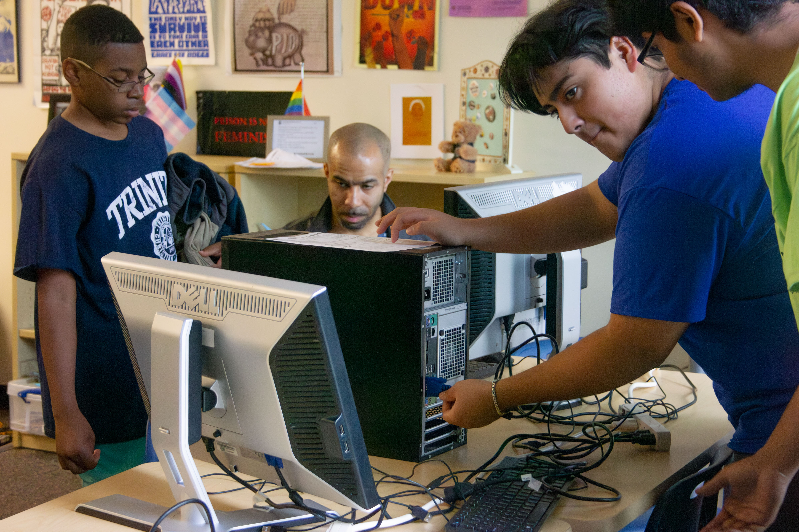
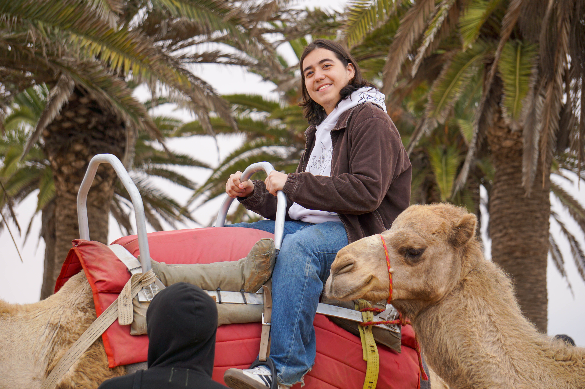

Learn at your own pace.
Advance when you’re ready. Switch STEM subjects, explore new interests, and grow in a place where you are welcome to begin wherever you are.

Learn. Teach. Lead. Repeat.
At ETHS, students learn engineering, teach what they know, serve their community, and discover that a skill learned after school can matter far beyond the clubroom.
WHAT HAPPENS HERE
Students explore real technology at their own pace, turn their interests into useful projects, and grow into teachers who strengthen the entire club.
Advance when you’re ready. Switch STEM subjects, explore new interests, and grow in a place where you are welcome to begin wherever you are.
Make something you want to use, then build for someone else. Your work can travel through the wider YTC network and become useful far beyond the clubroom.
Explore different STEM fields. Our 3D-printing curriculum began when one student expressed an interest, found room to develop it, and grew the idea into an asset the whole club can learn from and build on.
“What comes into the clubroom doesn’t stay there.”
Students deepen their own skills by teaching them forward, turning individual knowledge into a resource for the entire club.
THE MODEL IN MOTION
A university mentor teaches an ETHS student. That student becomes the next teacher.
Skills move. Confidence moves. Responsibility moves.

Chris at the 100-computer giveaway, demonstrating a family’s new connection to the digital world.
“When I taught someone how to fix a computer, and then I saw them teaching someone else, it made me proud. What you learn here grows because you share it.”
— Chris, 17
ETHS students teach locally, mentor remotely, and build relationships farther from home.
2025: five YTC members joined an eight-student ETHS delegation to Namibia.

Chris on the YTC trip to Namibia following computers he refurbished to the place they ended up.
YTC Club Announcement
Starting this fall, YTC club members will have the opportunity to learn with and be mentored by students from Georgia Tech.
Georgia Tech is the first university to join YTC’s College Partner Program. Additional college partners will join virtually over time, expanding the network available to students at ETHS and across the YTC Global Alliance.


This partnership marks the beginning of YTC’s College Partner Program—connecting younger students with college mentors who can help them deepen their technical skills, explore new ideas, and see where their own learning can lead.
WHERE IT LEADS
Former YTC students carry the clubroom with them — the habit of learning something, taking responsibility for it, and helping the next person.

YTC graduates carry technical confidence, responsibility and a habit of helping the next person.

The clubroom experience continues through college, careers, service and mentorship.

Different paths begin with the same practice: learn something real, then teach it forward.
WHEN THE WORLD CAME TO ETHS
Before ETHS students traveled as international teachers, they spent months learning beside community leaders from around the world. Through two U.S. Department of State exchange programs implemented by IREX, YTC hosted people who were already organizing, teaching and solving problems in their home countries.
They arrived with lived experience no textbook could reproduce: what it means to build opportunity in Pakistan, El Salvador, Mexico, Nigeria, Kosovo, Ghana, Namibia and Egypt. ETHS students could ask questions, watch accomplished leaders work, share their own ideas and discover that global collaboration is a relationship—not a map.
Imagine being an ETHS student and meeting community organizers, innovators and agents of change from around the world—people already leading in their own communities. The fellows came to learn from American organizations, but ETHS students learned just as much from them. That exchange helped create the human foundation for YTC’s Global Learning Alliance and showed what a Global Learning Center could be.


CEE is a year-long leadership experience that includes a three-month practicum with a U.S. civil-society organization. Fellows contribute to their host community, complete leadership training and develop a project to implement after returning home.
Learn about CEE at IREX →CSP is a year-long professional development exchange built around an intensive U.S. practicum, leadership coaching and a community project. Fellows bring years of experience to American organizations while developing ideas they can carry home.
Learn about CSP at IREX →Applicants needed demonstrated community or civil-society experience—not simply an interest in leadership.
Eligible applications were reviewed and scored, followed by semifinalist interviews and finalist selection.
English proficiency, professional readiness and a strong match with a U.S. host were essential to the practicum.
Fellows returned to their countries to apply the experience through community-based projects and continuing relationships.
Three or four months is long enough for “a visitor” to become a mentor, colleague and friend.
For ETHS students, the value was cumulative: the conversation after a meeting, the story told over lunch, the chance to test an idea with someone who understood a completely different community, and the realization that leadership can cross borders without losing its local roots.
This record honors people who directly taught, mentored, presented to or collaborated with ETHS students.


The Community Engagement Exchange and Community Solutions programs are sponsored by the U.S. Department of State with funding provided by the U.S. Government and supported in their implementation by IREX. Program requirements and timelines vary by cohort.
FROM EVANSTON OUTWARD
ETHS students are part of a growing YTC network of partners, contacts and opportunities around the world.
Ghana · Namibia · Cameroon · Mozambique · Ethiopia · Sierra Leone · Nigeria · Pakistan · Iraq · Guatemala · Mexico
YTC and the Global Alliance have been making partners, growing relationships, and adding allies all over the globe. Be a part of where we are and where we go next.
ALL THOSE JOURNEYS

Technology is the medium: computers, fabrication, robotics, coding, troubleshooting.

Learning becomes responsibility when another person is waiting for you to explain what you know.

That is where technical confidence starts turning into leadership.
THE CLUB HAS GENERATIONS
“It's like the club has generations. Leaders change, but the idea stays.”
— Furqaan · ETHS

SUPPORT YTC EVANSTON
Support helps cover the practical things that keep student-led learning moving: technology, instruction, program supplies and the next serious teaching opportunity.